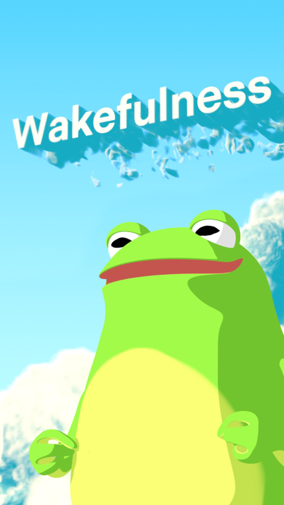
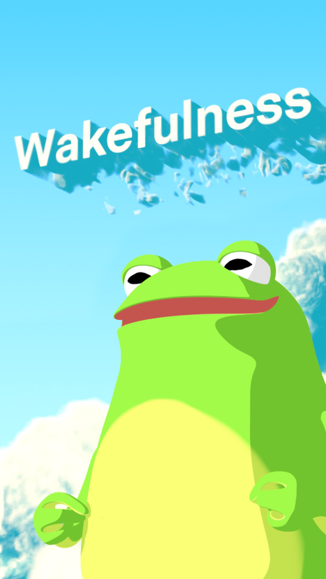

Loading...

It is funny to revisit my initial storyboards and pre-production plan as the old vision evolved dramatically throughout development. Originally I planned to execute the premise of getting morning sunlight in 2D. What pushed me to switch to 3D animation was how dynamic I could make the video and how much I gained to learn from diving head-first into the medium. Working in a 3D environment could make my storyboard shots more exciting. And although I have done smaller projects using tools such as Blender, I felt that this project would be a great reason to gain a deeper understanding of the medium. I have never attempted an animation requiring this much skill. Therefore, much of the final product had to be learned during production.
This was a surprisingly insightful question I encountered during a feedback session for my PSA in the pre-production phase. I presented my idea as a way to improve your morning routine by increasing wakefulness, mood, and focus. This video suggested going outside within an hour of waking to get exposure to indirect sunlight. I received comments about how simple and beneficial this one action was. With that, a few people brought up that it seemed unachievable. As much as they loved the idea, they felt they could not make time for it in their morning schedule. Despite this being the optimal method, some suggested that alternatives should be the focus. Ones that do not produce as good results but are easier for people to do.
I had to weigh the following; should my PSA show the most effective method at the expense of some thinking it is unachievable, or do I present an alternative that more people would do at the expense of poorer results? I decided to compromise by increasing the time to view sunlight after waking to two hours. In addition, I chose to double down on everything else as I reasoned that the action was not difficult enough to warrant presenting the alternative method and that the benefits far exceed the difficulty.
For future projects, I will consider this balance as it was a great question to analyze the benefits of change compared to the realistic amount of people who would change.
With the art direction set, Blender took center stage as the versatile 3D computer graphics software to fuel this project. Offering features in modeling, sculpting, texturing, environment creation, and animation, Blender was the perfect tool to build the project while allowing me to develop the fundamentals of 3D art creation.
To create engaging text animations, I used After Effects for its powerful 2D animation capabilities to give on-screen writing that extra wow factor.
Lastly, no project is complete without a good soundscape. Hence, I used Premiere Pro in conjunction with Epidemic Sound to provide the audio experience. High-quality sound bites were imported from Epidemic to help sell the visuals. Premiere was used to help arrange the chosen audio.
In the early stages of development, I attempted to stick with the character in the storyboard and develop him in 3D. All was going well except for a small problem.
My character looked bad...
I could not for the life of me make him look appealing. I tried different head shapes, hand shapes, colors, and body dimensions to no avail. As a beginner in 3D character design, this massive roadblock made my confidence in the project falter. After all, if I could not even get the character down, how would I be able to do everything else?
After a couple of days of frustration, I jokingly thought anything would be easier to model like a frog. And then it hit me; maybe making our main character a frog could work. The more I thought about it, the more I realized the project elevated with this new creative vision. An anthropomorphic frog would be cartoony, dynamic, and more inclusive than the male character. It also would make for a unique storytelling piece that would presumably keep viewers interested. With that, I went all in and made the story follow our froggy friend and their peaceful life in a pond.
To give the frog its skin and colors, I had to revisit fundamentals in character creation such as UV unwrapping and texture painting. I was surprised as even a simple character like our frog requires quite a bit of process work and attention to detail.
One of my proudest moments during production was animating the frog to bring this character to life. This was also one of the hardest sections requiring an understanding of building character rigs and animation fundamentals. Having to create a custom rig/character control set was technically challenging as it needed to accurately represent the frog's body while providing enough control points to move it how I wanted. Once that was complete, I animated using references where I acted out the frog's motions to get a sense of how natural movement looks.
Equally as challenging is the world-building and creating scenes which the frog would live. I did a lot of research and experimentation to find the elements and style that fit the vision. From this, I ended up with an anime-inspired cartoon look highlighting the serenity of the outdoors.
Before this project, I created all my materials using texture maps. In other words, any object I made in Blender would usually have a surface made using realistic images that captured the color, roughness, and surface imperfections of real-world items. With procedural materials, we instead rely on creating materials within the program itself. Using many tutorials online, I found others teaching ways to achieve clouds, water, grass, and trees in the style I was looking for. I followed their tutorials and learned about their thought processes and technical know-how to create some materials on my own. The below screenshots of the node-based workflow are how these procedural materials look during development. The two images show materials for the treebark and the frog character.
I look back at this project with a lot of pride as it ended up being a great piece that developed me into a more competent designer. The learning process was fun as it felt like I could take the PSA in any direction I wanted and still have access to knowledge online to help achieve that goal. I was also surprised with how much I pulled off with little previous experience with something so grand. I now feel more confident working in 3D and am excited for the next project to challenge me once again.
 



© Caden Chan. All Rights Reserved. All Lefts Up For Grabs.
A website made with love by yours truely xoxo